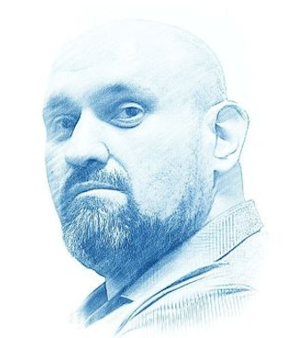

Márian Magát

Márian Magát, the former candidate of the “Our Slovakia” party LSNS, was sentenced to 6 years in prison on January 25, 2024. In his book “Židocracy” he is said to have questioned the murder of over 6 million Jews in World War II. Magát faced up to 8 years in prison. Authorities arrested Magát in early 2022 after a hearing in Žilina and accused him of 36 counts of “extremism.”
For more information, please click here.